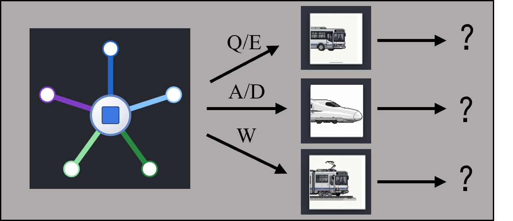
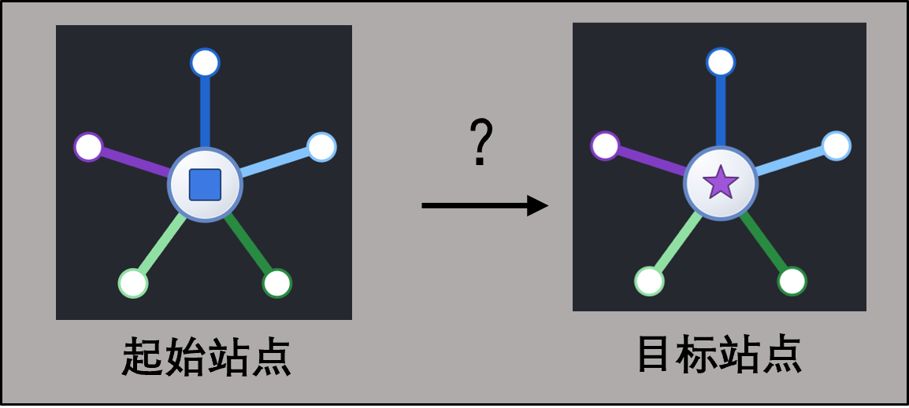

<!DOCTYPE html>
<html lang="zh-CN">
<head>
  <meta charset="UTF-8" />
  <meta name="viewport" content="width=device-width, initial-scale=1.0" />
  <title>navigation</title>
  <script src="dist/jspsych.js"></script>
  <script src="dist/plugin-html-keyboard-response.js"></script>
  <script src="dist/plugin-call-function.js"></script>
  <script src="dist/axios.min.js"></script>
  <script src="dist/naodao-2021-12.js"></script>
  <link rel="stylesheet" href="dist/jspsych.css" />
  <style>
    /* 对齐 navigation/main2.py：背景与交通示意图面板 */
    body { font-family: "Segoe UI", "Microsoft YaHei", "SimHei", sans-serif; background: #1c1f26; color: #e8ecf6; }
    #jspsych-content { min-height: 100vh; padding-bottom: 32px; }
    .nc-nav-trial { max-width: 800px; margin: 0 auto; padding: 16px 24px 28px; font-size: 16px; line-height: 1.5; }
    .nc-nav-meta { margin-bottom: 12px; }
    .nc-nav-line { display: flex; align-items: center; justify-content: space-between; flex-wrap: wrap; gap: 10px 16px; margin: 10px 0; min-height: 44px; }
    .nc-nav-line--cur .nc-nav-line-txt { color: #b4e6b4; }
    .nc-nav-line--goal .nc-nav-line-txt { color: #ffc8a0; }
    .nc-nav-line-txt { font-size: 18px; font-weight: 500; flex: 1; min-width: 220px; }
    /* 正式试次：目标文案 + 图例紧挨、整行水平居中；与 nav_runner GOAL_STATION_IMG_CSS 同步的 --nc-goal-token-px 上，文字与圆同高垂直居中 */
    .nc-nav-line--goal {
      justify-content: center;
      align-items: center;
      gap: 10px 12px;
    }
    .nc-nav-line--goal .nc-nav-line-txt {
      flex: 0 1 auto;
      min-width: 0;
      display: flex;
      align-items: center;
      min-height: var(--nc-goal-token-px, 65px);
      line-height: 1.2;
      box-sizing: border-box;
    }
    .nc-goal-legend-wrap {
      display: flex;
      align-items: center;
      justify-content: center;
      flex-shrink: 0;
      width: var(--nc-goal-token-px, 65px);
      height: var(--nc-goal-token-px, 65px);
      line-height: 0;
      box-sizing: border-box;
    }
    .nc-goal-legend-token {
      display: block;
      width: 100%;
      height: 100%;
      filter: drop-shadow(0 2px 4px rgba(0,0,0,.35));
    }
    .nc-station-img--inline { width: 40px; height: 40px; object-fit: contain; flex-shrink: 0; filter: drop-shadow(0 2px 4px rgba(0,0,0,.35)); }
    .nc-nav-vis-wrap { text-align: center; margin: 18px 0 8px; }
    .nc-nav-vis-title { font-size: 13px; color: #828a9a; margin-bottom: 10px; }
    .nc-nav-vis-frame { display: inline-block; background: #262830; border: 2px solid #464c5a; border-radius: 12px; padding: 10px; box-sizing: border-box; }
    .nc-vis-svg { display: block; margin: 0 auto; max-width: 100%; height: auto; touch-action: none; user-select: none; pointer-events: none; }
    .nc-nav-legend { display: flex; justify-content: center; gap: 16px; flex-wrap: wrap; font-size: 12px; color: #b4bcc8; margin-top: 10px; }
    .nc-nav-legend--detailed { flex-direction: column; align-items: center; gap: 6px; font-size: 11px; max-width: 320px; margin-left: auto; margin-right: auto; }
    .nc-leg-line { display: inline-block; width: 22px; height: 4px; border-radius: 2px; vertical-align: middle; margin-right: 4px; }
    .nc-leg-line--2 { margin-left: 2px; margin-right: 4px; }
    .nc-msg { min-height: 28px; color: #f0a96e; margin-top: 12px; text-align: center; }
    .nc-exp-panel { font-size: 14px; color: #bcc6d8; line-height: 1.55; margin-bottom: 12px; padding: 10px 12px; background: #22262e; border-radius: 8px; border: 1px solid #353c48; }
    .nc-trial-progress { text-align: center; font-size: 14px; font-weight: 600; color: #9eb4d8; letter-spacing: 0.04em; margin: 0 0 12px; padding: 8px 12px; background: #22262e; border-radius: 8px; border: 1px solid #353c48; }
    /* 指导语（对齐 NC_MIX_TASK / mix_session_guidance） */
    .nc-inst { max-width: 680px; margin: 0 auto; padding: 28px 24px 36px; color: #e8ecf6; }
    .nc-inst h2 { font-size: 22px; font-weight: 600; color: #e6ebff; margin: 0 0 6px; letter-spacing: 0.02em; }
    .nc-inst .nc-inst-tag { font-size: 12px; color: #7d8696; letter-spacing: 0.06em; margin-bottom: 14px; }
    .nc-inst p { line-height: 1.72; color: #c4ccd8; margin: 0 0 12px; font-size: 15px; }
    .nc-inst p.nc-inst-hint { font-size: 14px; color: #8f98a8; margin-top: 16px; }
    .nc-inst strong { color: #eceff4; font-weight: 600; }
    /* 练习 / 正式指导示意图：与 crafting ae-paradigm .nc-inst-figure 一致 */
    .nc-inst-figure { margin: 0 0 18px; text-align: center; }
    .nc-inst-figure img {
      display: block;
      margin: 0 auto;
      max-width: 100%;
      width: min(100%, 560px);
      height: auto;
      max-height: min(48vh, 380px);
      object-fit: contain;
      border-radius: 12px;
      border: 2px solid #464c5a;
      background: #262830;
      box-sizing: border-box;
    }
  </style>
</head>
<body></body>
<!-- 先由 bundle 注入数据，再加载 nav_embed 覆盖（与 export 一致）；仅 bundle 也可独立运行 -->
<script src="materials/nav_bundle.js"></script>
<script>
(function () {
  if (window.NC_NAV_GRAPH) {
    window.NC_MIX_NAV_EMBED = {
      graph: window.NC_NAV_GRAPH,
      trialSequence: window.NC_TRIAL_SEQUENCE || { trials: [] },
    };
  }
})();
</script>
<script src="materials/nav_embed.js"></script>
<script src="js/asset_resolve.js"></script>
<script src="js/config.js"></script>
<script src="js/grid_geometry.js"></script>
<script src="js/nav_runner.js"></script>
<script>
(function () {
  if (!window.NC_MIX_NAV_EMBED || !window.NC_MIX_NAV_EMBED.graph) {
    document.body.innerHTML =
      "<div style='padding:24px;'>缺少导航数据：请保留 <code>materials/nav_embed.js</code> 或 <code>materials/nav_bundle.js</code>；完整导出可在 <code>NC_MIX_TASK2/scripts</code> 运行 <code>python export_nav_web.py</code>。</div>";
    return;
  }

  if (
    typeof initJsPsych !== "function" ||
    typeof jsPsychHtmlKeyboardResponse === "undefined" ||
    typeof jsPsychCallFunction === "undefined"
  ) {
    document.body.innerHTML =
      "<div style='padding:24px;line-height:1.6;max-width:560px;'>缺少 jsPsych 依赖：本目录 <code>dist/</code> 下需要存在 " +
      "<code>jspsych.js</code>、<code>jspsych.css</code>、<code>plugin-html-keyboard-response.js</code>、<code>plugin-call-function.js</code>。" +
      "可从同仓库 <code>crafting_jspsych/ae-paradigm/dist/</code> 复制同名文件后再双击打开。</div>";
    return;
  }

  var isFile = window.location.protocol === "file:";
  var extensions =
    !isFile && typeof Naodao !== "undefined" ? [{ type: Naodao }] : [];

  var graph = window.NC_MIX_NAV_EMBED.graph;
  var seq = window.NC_MIX_NAV_EMBED.trialSequence || {};
  var trials = seq.trials || [];

  var jsPsych = initJsPsych({
    override_safe_mode: true,
    extensions: extensions,
    on_finish: function () {
      var rows = JSON.stringify(jsPsych.data.get().values(), null, 2);
      var blob = new Blob([rows], { type: "application/json;charset=utf-8" });
      var url = URL.createObjectURL(blob);
      var a = document.createElement("a");
      a.href = url;
      a.download = "navigation_nc_mix_" + Date.now() + ".json";
      a.click();
      URL.revokeObjectURL(url);
      var el = document.getElementById("jspsych-content");
      if (el) {
        el.innerHTML =
          "<div style='padding:40px;text-align:center;font-size:20px;'>数据已尝试下载。请关闭本页。</div>";
      }
    },
  });

  /** @param trialProgress 正式试次传入 { current: n, total: N }，练习不传 */
  function mkNavTrial(graph, row, phase, idx, trialProgress) {
    return {
      type: jsPsychCallFunction,
      async: true,
      func: function (done) {
        var display = jsPsych.getDisplayElement();
        NCNavRunner.runNavTrial(
          display,
          graph,
          row,
          phase,
          idx,
          function (payload) {
            done(payload);
          },
          trialProgress || null
        );
      },
      data: { screen_id: "navigation_trial", phase: phase },
    };
  }

  function showPreloadOverlay(text) {
    var host = document.getElementById("jspsych-content") || document.body;
    if (!host) return;
    host.innerHTML =
      "<div id='nc-preload-mask' style='min-height:70vh;display:flex;align-items:center;justify-content:center;'>" +
      "<div style='background:#282c36;border:1px solid #484e5e;border-radius:12px;padding:20px 24px;max-width:560px;text-align:center;'>" +
      "<div style='font-size:18px;color:#e8ecf6;margin-bottom:8px;'>正在准备实验素材</div>" +
      "<div id='nc-preload-text' style='font-size:14px;color:#bcc6d8;line-height:1.6;'>" +
      (text || "请稍候...") +
      "</div>" +
      "</div>" +
      "</div>";
  }

  function updatePreloadOverlay(text) {
    var el = document.getElementById("nc-preload-text");
    if (el) el.textContent = text;
  }

  function loadImage(url) {
    return new Promise(function (resolve) {
      var img = new Image();
      img.onload = function () {
        if (typeof img.decode === "function") {
          img.decode().then(
            function () {
              resolve(true);
            },
            function () {
              resolve(true);
            }
          );
          return;
        }
        resolve(true);
      };
      img.onerror = function () {
        resolve(false);
      };
      img.src = url;
    });
  }

  async function run() {
    showPreloadOverlay("正在加载指导示意图…");
    await loadImage("materials/intro_navigation1.png");
    updatePreloadOverlay("正在加载指导示意图… 1 / 2");
    await loadImage("materials/intro_navigation2.png");
    updatePreloadOverlay("即将开始…");
    await new Promise(function (r) {
      setTimeout(r, 200);
    });

    var main = trials;

    var timeline = [];
    timeline.push({
      type: jsPsychCallFunction,
      async: true,
      func: function (done) {
        var el = jsPsych.getDisplayElement();
        el.innerHTML =
          "<div class='nc-inst'>" +
          "<h2>练习阶段</h2>" +
          "<div class='nc-inst-tag'>自由探索 </div>" +
          "<figure class='nc-inst-figure' aria-label='导航练习界面示意图'>" +
          "" +
          "</figure>" +
          "<p>本阶段用于熟悉界面与<strong>不同站点之间的关系</strong> 。</p>"+
          "<p>已知一共有9个不同的城市交通站（如红色三角站），请在5分钟内自由按键；</p>" +
          "<p>要求使 <strong>每一站点至少抵达 2 次</strong>；</p>" +
          "<p><strong>探索时长与探索目标</strong>均达标后自动结束</p>" +
          "<p><strong>操作如下：</strong>实验内课见当前站点与不同的交通工具选项（与其对应按键）</p>" +
          "<p>分别对应<strong>公交 Q / E</strong>（前/后），<strong>地铁 A / D</strong>（前/后），<strong>快速巴士 W</strong>。</p>" +
          "<p>当执行可移动的交通工具时，<strong>被试会成功移动并抵达下一站点</strong></p>" +
          "<p>当前站无法执行时，<strong>对应线路会短暂标红</strong>。</p>" +
          "<p><strong>请观察站点如何变化，并尽量记住站点之间的交通线路。</strong></p>" +
          "<p class='nc-inst-hint'>按 <strong>空格</strong> 开始探索；探索时长与探索目标均达标后自动结束。</p>" +
          "</div>";
        function introKeys(e) {
          if (e.code === "Space" || e.key === " ") {
            e.preventDefault();
            window.removeEventListener("keydown", introKeys, true);
            NCNavRunner.runNavExploration(el, graph, function (payload) {
              done(payload);
            });
          }
        }
        window.addEventListener("keydown", introKeys, true);
      },
      data: { screen_id: "navigation_exploration_block" },
    });
    timeline.push({
      type: jsPsychHtmlKeyboardResponse,
      stimulus:
      "<div class='nc-inst'>" +
        "<h2>正式实验</h2>" +
        "<figure class='nc-inst-figure' aria-label='导航正式实验界面示意图'>" +
        "" +
        "</figure>" +
        "<p>请依照<strong>您所学习的城市交通路线</strong>，通过使用不同的交通工具，<strong>从起始站点抵达提示的目标站点</strong>。</p>" +
        "<p>键位与练习一致。</p>" +
        "<p>完成当前试次后根据屏幕提示继续下一试次。</p>" +
        "<p>本阶段共 <strong>" +
        main.length +
        "</strong> 个试次。</p>" +
        "<p class='nc-inst-hint'>按 <strong>空格</strong> 开始正式实验。</p></div>",
      choices: [" "],
    });
    main.forEach(function (row, i) {
      timeline.push(
        mkNavTrial(graph, row, "main", i + 1, { current: i + 1, total: main.length })
      );
    });
    timeline.push({
      type: jsPsychHtmlKeyboardResponse,
      stimulus:
        "<div class='nc-inst' style='text-align:center;max-width:560px;'>" +
        "<h2>实验结束</h2>" +
        "<p>全部试次已完成。浏览器将尝试下载数据文件，请妥善保存。</p>" +
        "<p class='nc-inst-hint'>按 <strong>空格</strong> 结束并触发下载。</p></div>",
      choices: [" "],
    });

    jsPsych.run(timeline);
  }

  run();
})();
</script>
</html>
